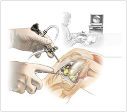

Joint endoscopy creates a small incision of less than 1cm in the area of the damaged jointand uses a joint endoscope equipped with camera so that surgeons can eliminate damaged cartilage and foreign bodies inside joints by monitoringthe conditions. The monitorenlarges the picture of the inside of the jointso that surgeonscan detect and fix problems which had not been identified by CT or MRI.